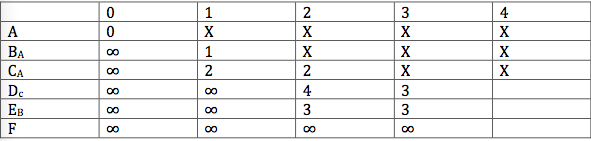

Created by @don4yu
What is the runtime for the following pseudocode (assume A is an array)?
for i = 0 to length(A)
int sum = 0;
for j = i to length(A)
sum += j;
A[i] = sum;
O(n^2) <- because we have one for loop that runs n times and within that for loop we run another for loop that runs ~n-1, n-2, n-3,...,1 times. This is about n(n-1)/2 computable steps which is O(n^2) *only count the highest-order term for big-O
Searches for the minimum element at each interval and puts that in the front of the unsorted portion of the list
Runtime is O(n^2)
Which of the following is a possible intermediate state for the list {11, 7, 5, 2} during selection sort?
We find the minimum element and swap it with the first non-sorted element (here we found the minimum element 2 and swapped it with 11).
Swap two adjacent elements if necessary as you go through the list leftwards. At each iteration you find the first unsorted element and keep swapping it leftwards until it is inserted into the right place.
Runtime is O(n^2)
What state is the list {4, 1, 6, 2} in after the 3rd step in the insertion sort algorithm?
{1,4,2,6} <- we first swap 4 and 1 we then see 4 and 6 and don’t need to swap them; we then swap 2 and 6.
*Note answer could be {1, 2, 4, 6} if we are considering passes in the algorithm rather than steps. After the first pass the list is now {1, 4, 6, 2} and after the second pass it is still {1, 4, 6, 2} and after the third pass it is {1, 2, 4, 6}
Which of the following is the big-O runtime for doing a search on an unsorted list?
We can just do a linear search on an unsorted list. (note that sorting it and then doing a binary search would take longer)
Think of arrays as cabinets! You can put your shoes inside them.
//array of 10 ints
int[] myNumbers = new int[10];
//access 2nd element
int x = myNumbers[2];
Resizable array (don't need to worry about the size of the array anymore!)
Example Question: Which of the following snippets of Java code will work properly?
int[] arr;
arr[0] = 6;
int[] arr = new int[5];
arr[5] = 6;
int[] arr = new int[5];
arr[0] = 3;
Choice #1 is incorrect because you have to initialize an array first. Choice #2 is incorrect because the last element of an array is at len(array) - 1.
Example Question: For what values of P and Q is the expression below false?
(NOT (P and Q) and NOT(P or NOT Q))
| P | Q | P ^ Q | NOT (P ^ Q) | P v NOT Q | NOT (P v NOT Q) | (NOT (P ^ Q) and NOT (P v NOT Q)) |
|---|---|---|---|---|---|---|
| 1 | 1 | 1 | 0 | 1 | 0 | 0 |
| 1 | 0 | 0 | 1 | 1 | 0 | 0 |
| 0 | 1 | 0 | 1 | 0 | 1 | 1 |
| 0 | 0 | 0 | 1 | 1 | 0 | 0 |
We see that the expression is only true for P=False and Q=True
Example Question: If I have a circuit with 2 AND gates, 2 NOT gates, and 5 OR gates, how many transistors will I need?
2 * 3 + 2 + 5 * 3 = 23
Example Question: Suppose a machine language uses op codes that are 4 bits long. What is the maximum number of distinct instrutions this language could have?
16 <- 2^4 possible instructions
It's important to remember the network layers. A short mnemonic is provided.
1. Which of the following is a protocol of the application layer?
HTTP is an application layer protocol for sending data across the Web. Other application layer protocols that are important are FTP, SMTP.
2. Which of the following is not a standard layer of the internet?
Computer is not a layer.
Given the above graph. What is the 4th node that we analyze under Djikstra's algorithm?
Either D or E (at this stage of djikstra's algorithm it takes the same amount of steps to get to either D or E and so we could analyze either to get the shortest path)
What do the following instructions do on the following tape?
(1, 1, 0, 1, R)
(1, 0, 1, 1, R)
(1, b, b, 2, L)
(2, 1, 1, 2, L)
(2, 0, b, 2, L)
Keep pressing down arrow for steps. Bold symbol is where the tape is point at.
b01000b in state 1
b00000b in state 1
b00100b in state 1
b00110b in state 1
b00111bb in state 1
b00111b in state 2
b00111b in state 2
b00111b in state 2
b00111b in state 2
b0b111b in state 2
bbbb111b in state 2
Answer is b111b. Remember that blanks extend infinitely on both sides.